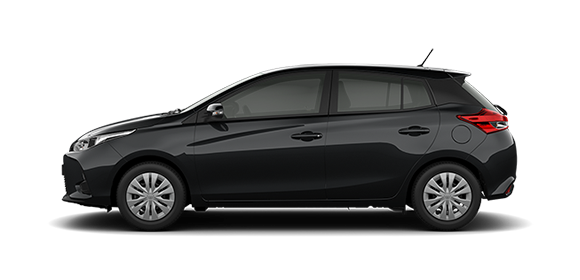
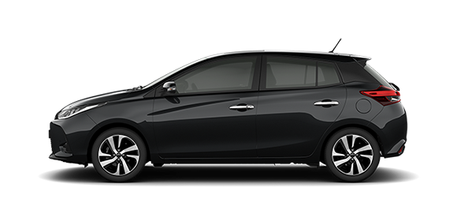
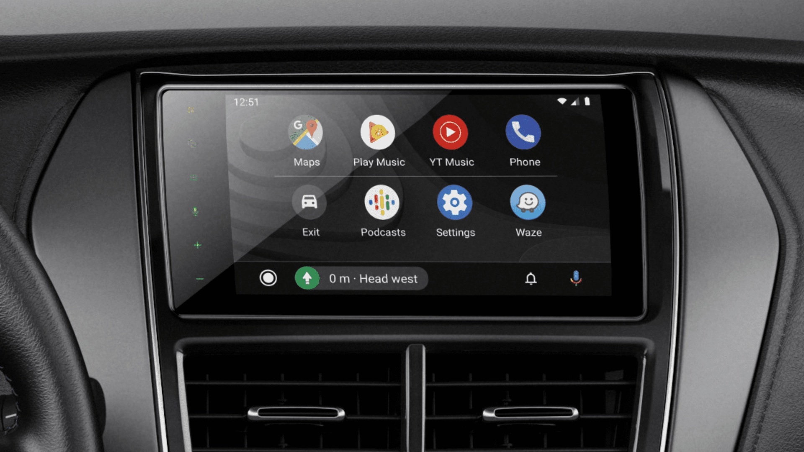
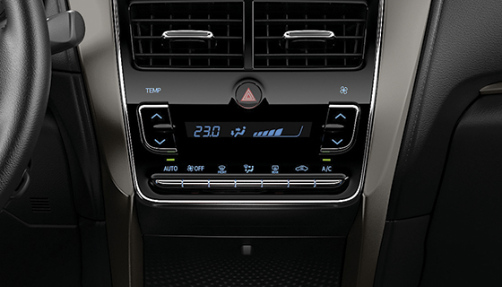
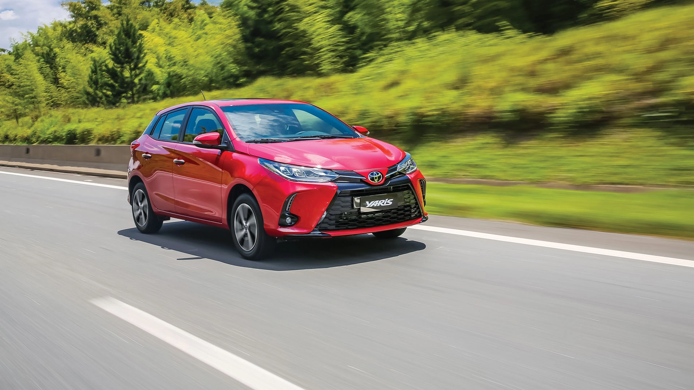
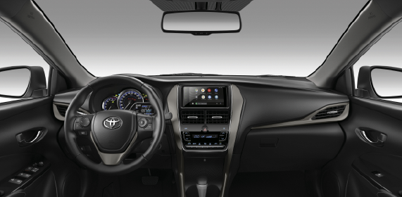
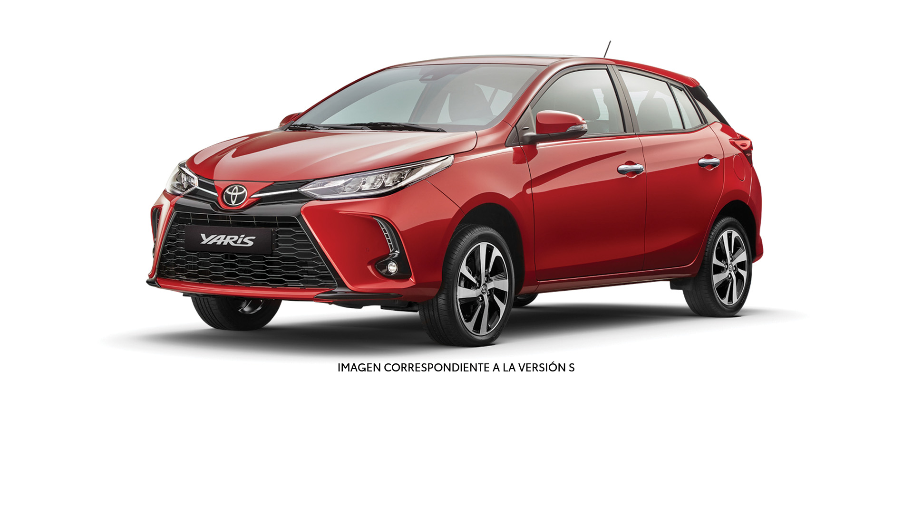
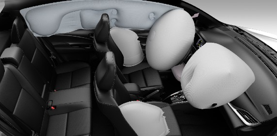
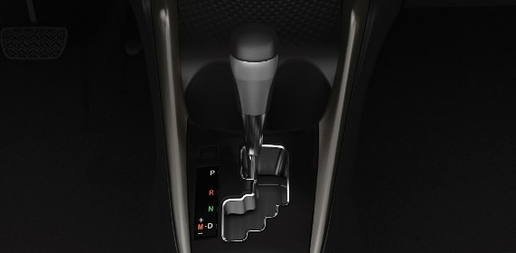

Encontrá tu versión y contáctanos.
Seleccioná la versión que más te guste.

YARIS 1.5 S CVT 5P
$36.315.000
XLS+ 1.5 CVT 5P
$40.340.000

S 1.5 CVT 5P
$43.255.000
Razones para tener un Yaris

CONECTIVIDAD EN TODAS SUS VERSIONES
Audio con pantalla táctil LCD de 6.8” con conectividad Apple Car Play® & Android Auto®**

TOYOTA SAFETY SENSE
Yaris ofrece, en las versión S, Sistema de Pre-colisión frontal (PCS)* y Sistema de alerta de cambio de carril (LDA)*. Estos sistemas avanzados de asistencia a la conducción complementan al conductor en diversas situaciones de peligro para mitigar o evitar accidentes de tránsito.

CONFORT Y TECNOLOGÍA
Equipado con climatizador automático digital, cámara de estacionamiento y control de velocidad crucero, disponibles en versiones XLS+ y S.

Diferenciales

CONFORT Y TECNOLOGIA
A partir de las versiones XLS+, el Yaris cuenta con sensores de estacionamiento delanteros y traseros y levanta cristales eléctricos con función "one touch" en las cuatro puertas. Por su parte, la versión S incorpora techo solar eléctrico brindando una mayor sensación de amplitud.

DISEÑO
Diseño frontal con ópticas delanteras LED con regulación en altura, disponible en la versión S. Llantas de aleación de 16” para versiones XLS+ y S.

SEGURIDAD
7 airbags: frontales (x2), laterales (x2), de cortina (x2) y de rodilla (conductor). El equipamiento se completa con control de estabilidad, de tracción y asistente de arranque en pendiente.

PERFORMANCE
Caja automática CVT de 7 velocidades disponible en todas las versiones.